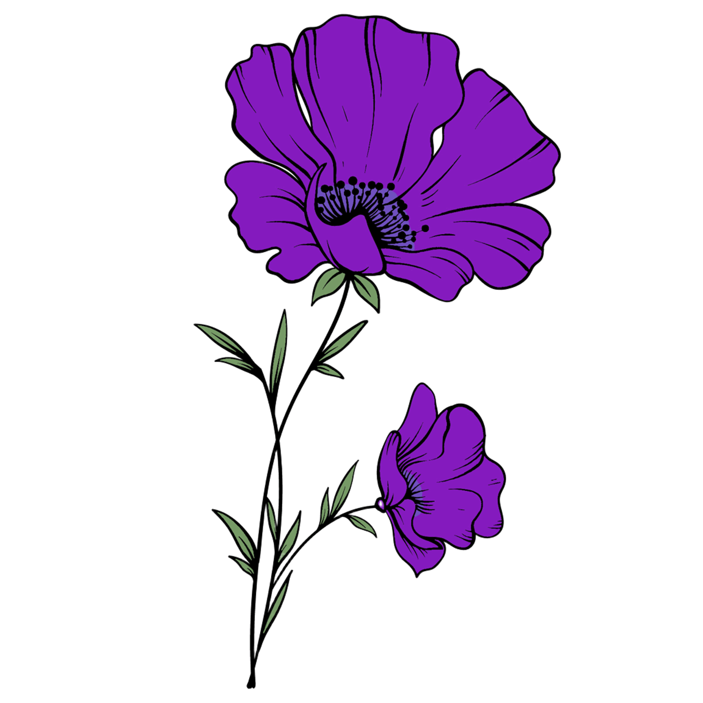

Анемона (Anemone)
Короткий опис: ніжна квітка з різнобарвними пелюстками.

Про квітку
Анемони — квітки з ніжними, тонкими пелюстками, що бувають білого, рожевого, синього або фіолетового кольору. Вони часто ростуть у лісах, садах і на луках, створюючи справжню казку серед зелені.
Ця квітка символізує очікування, легкість і крихкість життя. У культурі анемона асоціюється з чистотою та швидкоплинністю моменту, адже її пелюстки розкриваються лише на короткий період.
Анемони приваблюють комах-запилювачів і мають декоративну цінність у садах. Вони легко поєднуються з іншими весняними квітами, утворюючи яскраві та гармонійні композиції. У народних легендах квітка часто вважалася символом швидкоплинного щастя.